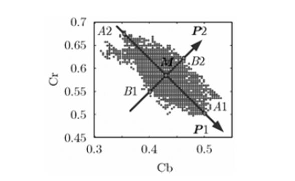
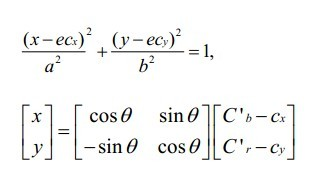
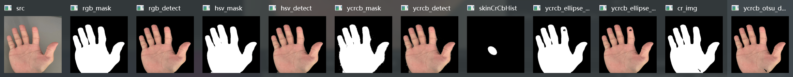
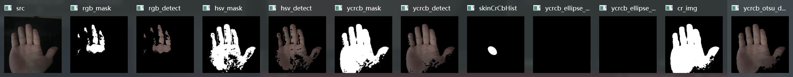
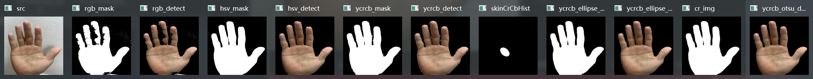
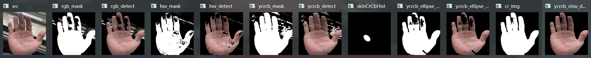

前言
opencv 中进行肤色检测的方法大致为以下五种方法。本文中的人体肤色以黄种人为例。
三种图像颜色空间
RGB
RGB（红绿蓝）是依据人眼识别的颜色定义出的空间，可表示大部分颜色。但在科学研究一般不采用RGB颜色空间，因为它的细节难以进行数字化的调整。它将色调，亮度，饱和度三个量放在一起表示，很难分开。它是最通用的面向硬件的彩色模型。该模型用于彩色监视器和一大类彩色视频摄像。
Opencv 采用的是 BGR，顺序不一样了而已。
HSV
RGB 是从硬件 的角度提出的颜色模型，在与人眼匹配的过程中可能存在一定的差异，HSV色彩空间是一种面向视觉感知 的颜色模型。
HSV色彩空间从心理学和视觉的角度出发，指出人眼的色彩知觉主要包含三要素：色调（Hue，也称为色相）、饱和度（Saturation）、亮度（Value），色调指光的颜色，饱和度是指色彩的深浅程度，亮度指人眼感受到的光的明暗程度。
HSV范围H：0~180 S：0~255 V：0~255
**色调：**色调与混合光谱中的主要光波长相关，例如“赤橙黄绿青蓝紫”分别表示不同的色调。如果从波长的角度考虑，不同波长的光表现为不同的颜色，实际上它们体现的是色调的差异。
**饱和度：**指相对纯净度，或一种颜色混合白光的数量。纯谱色是全饱和的，像深红色（红加白）和淡紫色（紫加白）这样的彩色是欠饱和的，饱和度与所加白光的数量成反比。
**亮度：**反映的是人眼感受到的光的明暗程度，该指标与物体的反射度有关。对于色彩来讲，如果在其中掺入的白色越多，则其亮度越高；如果在其中掺入的黑色越多，则其亮度越低。
YCrCb
人眼视觉系统（HVS, Human Visual System）对颜色的敏感度要低于对亮度的敏感度。在传统的 RGB色彩空间内，RGB三原色具有相同的重要性，但是忽略了亮度信息。
YCbCr 进行了图像子采样，是视频图像和数字图像中常用的色彩空间。Y 代表亮度，Cb 和 Cr 代表蓝色分量和红色分量。该模型的数据可以是双精度类型的，但存储空间为8位无符号整形数据空间。Y的取值范围为16~235，蓝红分量的取值范围为16~240。在通用的图像压缩算法中（如JPEG算法），首要的步骤就是将图像的颜色空间转换为YCbCr空间。
基于RGB颜色空间的阈值肤色识别
根据肤色在 RGB 颜色空间的分布，将满足点设为白色，范围外设为黑色，即可提取。
在[human skin color clustering for face detection](EUROCON03.TEX (uni-lj.si) )一文中 Jure Kovac, Peter Peer, and Franc Solina三人提出了肤色在 RGB 颜色空间的大致范围。
在均匀光照下的肤色：
{ R > 95 , G > 40 , B > 20 R > G , R > B m a x { R , G , B } − m i n { R , G , B } > 15 ∣ R − G ∣ > 15 \begin{cases}
R > 95, G > 40, B > 20 \\[2ex]
R > G, R > B \\[2ex]
max\{R,G,B\} - min\{R,G,B\} > 15 \\[2ex]
\vert R - G \vert > 15
\end{cases}
⎩ ⎪ ⎪ ⎪ ⎪ ⎪ ⎪ ⎪ ⎪ ⎪ ⎨ ⎪ ⎪ ⎪ ⎪ ⎪ ⎪ ⎪ ⎪ ⎪ ⎧ R > 9 5 , G > 4 0 , B > 2 0 R > G , R > B m a x { R , G , B } − m i n { R , G , B } > 1 5 ∣ R − G ∣ > 1 5
在强光下的肤色：
{ R > 220 , G > 210 , B > 170 R > B , G > B ∣ R − G ∣ ≤ 15 \begin{cases}
R > 220, G > 210, B > 170 \\[2ex]
R > B, G > B \\[2ex]
\vert R - G \vert \leq15 \\[2ex]
\end{cases}
⎩ ⎪ ⎪ ⎪ ⎪ ⎪ ⎪ ⎨ ⎪ ⎪ ⎪ ⎪ ⎪ ⎪ ⎧ R > 2 2 0 , G > 2 1 0 , B > 1 7 0 R > B , G > B ∣ R − G ∣ ≤ 1 5
代码
1 2 3 4 5 6 7 8 9 10 11 12 13 14 15 16 17 18 19 20 21 22 23 24 25 26 27 28 void RGB_Detect () Mat mask = Mat::zeros (src.size (), CV_8UC1); for (int i = 0 ; i < rows; i++) { Vec3b* p_src = src.ptr <Vec3b>(i); for (int j = 0 ; j < cols; j++) { if ((p_src[j](2 ) > 95 && p_src[j](1 ) > 40 && p_src[j](0 ) > 20 && p_src[j](2 ) > p_src[j](1 ) && p_src[j](2 ) > p_src[j](0 ) && abs (p_src[j](2 ) - p_src[j](1 )) > 15 && (MAX (p_src[j](0 ), MAX (p_src[j](1 ), p_src[j](2 ))) - MIN (p_src[j](0 ), MIN (p_src[j](1 ), p_src[j](2 )))) > 15 ) || (p_src[j](2 ) > 220 && p_src[j](1 ) > 210 && p_src[j](0 ) > 170 && p_src[j](2 ) > p_src[j](0 ) && p_src[j](1 ) > p_src[j](0 ) && abs (p_src[j](2 ) - p_src[j](1 )) <= 15 )) { mask.at <uchar>(i, j) = 255 ; } } } Mat rgb_detect; src.copyTo (rgb_detect, mask); imshow ("rgb_mask" , mask); imshow ("rgb_detect" , rgb_detect); }
基于HSV颜色空间的阈值肤色识别
在均匀光照下的肤色：
{ 0 ≤ H ≤ 20 S ≥ 48 V ≥ 50 \begin{cases}
0 \leq H \leq 20 \\[2ex]
S \geq 48 \\[2ex]
V \geq 50
\end{cases}
⎩ ⎪ ⎪ ⎪ ⎪ ⎪ ⎨ ⎪ ⎪ ⎪ ⎪ ⎪ ⎧ 0 ≤ H ≤ 2 0 S ≥ 4 8 V ≥ 5 0
代码
1 2 3 4 5 6 7 8 9 10 11 12 13 14 15 16 17 18 19 20 21 22 23 24 25 26 void HSV_Detect () Mat hsv_img; cvtColor (src, hsv_img, COLOR_BGR2HSV); Mat mask = Mat::zeros (src.size (), CV_8UC1); for (int i = 0 ; i < rows; i++) { Vec3b* p_src = hsv_img.ptr <Vec3b>(i); for (int j = 0 ; j < cols; j++) { if (p_src[j](0 ) >= 0 && p_src[j](0 ) <= 20 && p_src[j](1 ) >= 48 && p_src[j](2 ) >= 50 ) { mask.at <uchar>(i, j) = 255 ; } } } Mat hsv_detect; src.copyTo (hsv_detect, mask); imshow ("hsv_mask" , mask); imshow ("hsv_detect" , hsv_detect); }
基于YCrCb颜色空间的阈值肤色识别
正常黄种人的 Cr 分量大约在 140 至 175 之间，Cb 分量大约在 100 至 120 之间。
代码
1 2 3 4 5 6 7 8 9 10 11 12 13 14 15 16 17 18 19 20 21 22 void YCrCb_range_Detect () Mat ycrcb_img; cvtColor (src, ycrcb_img, COLOR_BGR2YCrCb); Mat mask = Mat::zeros (src.size (), CV_8UC1); for (int i = 0 ; i < rows; i++) { Vec3b* p_src = ycrcb_img.ptr <Vec3b>(i); for (int j = 0 ; j < cols; j++) { if (p_src[j](2 ) >= 77 && p_src[j](2 ) <= 130 && p_src[j](1 ) >= 133 && p_src[j](1 ) <= 173 ) { mask.at <uchar>(i, j) = 255 ; } } } Mat ycrcb_detect; src.copyTo (ycrcb_detect, mask); imshow ("ycrcb_mask" , mask); imshow ("ycrcb_detect" , ycrcb_detect); }
基于YCrCb颜色空间和椭圆皮肤模型的皮肤识别
研究发现，将皮肤映射到 YCrCb空间，则**在 YCrCb空间中皮肤的像素点近似成一个椭圆的分布。**因此如果我们得到了一个 CrCb 的椭圆，对于一个点的坐标（Cr, Cb），我们只需判断它是否在椭圆内（包括边界）就可以得知它是不是肤色点。
该算法对于光线的敏感性没有这么高，基本上该检测到的皮肤都能够检测到，抗干扰能力相对较强。（原因大概是 YCrCb 中 Y分量表示明亮度，而“Cr”和“Cb” 表示的则是色度，作用是描述影像色彩及饱和度）
肤色区域的颜色与亮度成非线性函数关系，在低亮度条件下，YCbCr 空间中色度的聚类性会随 Y 呈非线性变换降低。为了使肤色聚类不受亮度 Y 的影响并将 YCbCr 颜色空间中的色度 Cb、Cr进行非线性变换，在研究 YCbCr 颜色空间的肤色聚类情况的基础上，去掉高光阴影部分（即 Y 的最大最小值），YCbCr 空间色度非线性变换过程中，用 Cb·· Y 、 Cr·· Y 表示肤色区域的中轴线，肤色区域的宽度分别用 Vcb、Vcr 表示。
即将图像转化到YCbCr 空间并且在CbCr平面进行投影，因此我们采集了肤色的样本点，将其投影到此平面，并且投影后，我们进行了相应的非线性变换K-L变换

统计椭圆模型

我们是用一副图像来存储上面的椭圆的，而不是直接采用椭圆数学方程。该图像是二值图像，即椭圆区域内部为白色，其它地方为黑色。所以当其需要判断其它像素点时，只需将该像素点转换成 Cr，Cb 两个坐标，然后在上面的椭圆中找到该坐标的值，如果非 0，则为皮肤，反之亦然。
代码中直接采用 opencv 自带的绘制椭圆的 api 进行绘制。
1 2 3 Mat skinCrCbHist = Mat::zeros (Size (256 , 256 ), CV_8UC1); ellipse (skinCrCbHist, Point (113 , 155.6 ), Size (23.4 , 15.2 ), 43.0 , 0.0 , 360.0 , Scalar::all (255 ), -1 );
代码
1 2 3 4 5 6 7 8 9 10 11 12 13 14 15 16 17 18 19 20 21 22 23 24 25 26 27 28 29 30 31 32 void YCrCb_ellipse_Detect () Mat ycrcb_img; cvtColor (src, ycrcb_img, COLOR_BGR2YCrCb); Mat skinCrCbHist = Mat::zeros (Size (256 , 256 ), CV_8UC1); ellipse (skinCrCbHist, Point (113 , 155.6 ), Size (23.4 , 15.2 ), 43.0 , 0.0 , 360.0 , Scalar::all (255 ), -1 ); Mat mask = Mat::zeros (src.size (), CV_8UC1); for (int i = 0 ; i < rows; i++) { Vec3b* p_src = ycrcb_img.ptr <Vec3b>(i); for (int j = 0 ; j < cols; j++) { if (skinCrCbHist.at <uchar>(p_src[j](1 ), p_src[j](2 )) > 0 ) { mask.at <uchar>(i, j) = 255 ; } } } Mat ycrcb_ellipse_detect; src.copyTo (ycrcb_ellipse_detect, mask); imshow ("skinCrCbHist" , skinCrCbHist); imshow ("ycrcb_ellipse_mask" , mask); imshow ("ycrcb_ellipse_detect" , ycrcb_ellipse_detect); }
基于YCbCr颜色空间的Otsu阈值肤色识别
实现步骤很简单：实现 OTSU 阈值分割一般也是直接采用 opencv 自带的 api。
将 RGB图像转换到 YCrCb颜色空间，提取 Cr分量图像
对 Cr 做自二值化阈值分割处理（Otsu法）
OTSU阈值法原理
OTSU算法（大津法或最大类间方差法）使用的是聚类的思想 ，把图像的灰度数按灰度级分成 2 个部分，使得两个部分之间的灰度值差异最大，每个部分之间的灰度差异最小，通过方差的计算来寻找一个合适的灰度级别来划分。所以可以在二值化的时候采用 OTSU算法来自动选取阈值进行二值化。Otsu算法被认为是图像分割中阈值选取的最佳算法，计算简单，不受图像亮度和对比度的影响 。因此，使类间方差最大的分割意味着错分概率最小。
OTSU方法可以形象地理解为：求取直方图有两个峰值的图像中那两个峰值之间的低谷值T
OTSU算法步骤：
统计灰度级中每个像素在整幅图像中的个数
计算每个像素在整幅图像的概率分布
对灰度级进行遍历搜索，计算当前灰度值下前景背景类间概率
通过目标函数计算类间方差下对应的阈值（选择最大方差对应的阈值）
参数
含义
$ w_0 $
分开后前景像素点数占图像的比例
$ u_0 $
分开后前景像素点的平均灰度
$ w_1 $
分开后背景像素点数占图像的比例
$ u_1 $
分开后背景像素点的平均灰度
设 t 为设定的阈值，图像总平均灰度为：
u = w 0 ∗ u 0 + w 1 ∗ u 1 u=w_0*u_0+w_1*u_1
u = w 0 ∗ u 0 + w 1 ∗ u 1
从 L 个灰度级遍历 t，使得 t 为某个值的时候，前景和背景的方差最大，则这个 t 值便是我们要求得的阈值。其中，方差 g 的计算公式如下：
g = w 0 ( u 0 − u ) ( u 0 − u ) + w 1 ( u 1 − u ) ( u 1 − u ) g = w_0(u_0 - u)(u_0 - u) + w_1(u_1 - u)(u_1 - u)
g = w 0 ( u 0 − u ) ( u 0 − u ) + w 1 ( u 1 − u ) ( u 1 − u )
减少计算量可采用：
g = w 0 w 1 ( u 0 − u 1 ) ( u 0 − u 1 ) g = w_0w_1(u_0 - u_1)(u_0 - u_1)
g = w 0 w 1 ( u 0 − u 1 ) ( u 0 − u 1 )
代码
1 2 3 4 5 6 7 8 9 10 11 12 13 14 15 16 void YCrCb_otsu_Detect () Mat ycrcb_img; cvtColor (src, ycrcb_img, COLOR_BGR2YCrCb); vector<Mat> channels; split (ycrcb_img, channels); Mat cr_img = channels[1 ]; threshold (cr_img, cr_img, 0 , 255 , THRESH_BINARY | THRESH_OTSU); Mat ycrcb_otsu_detect; src.copyTo (ycrcb_otsu_detect, cr_img); imshow ("cr_img" , cr_img); imshow ("ycrcb_otsu_detect" , ycrcb_otsu_detect); }
OpenCV自带的函数
看到一些博客都会讲到 官方自带的 api：CvAdaptiveSkinDetector，但是我这个版本（4.6.0）并没有找到这个 api。
实验图
这里只是简单的模拟了不同环境：正常下、黑暗下、灯光下、阳光下。实际上还需要大量的数据集进行测试，不是专门搞这方面，懒得找了。另外代码里的一些颜色范围是可以进行调整的，下图都是在各自实现方法相同的参数下实现，这里没有给出调参的对比。另外别问为什么都是手部的检测，因为做这个实验主要是为了下个实验做准备，哈哈哈。




容易看出
基于 RGB 颜色空间的阈值肤色识别太受光线的影响了，背景杂质也好多。
基于 HSV 颜色空间的阈值肤色识别得出的结果也挺差的，背景杂质也好多，不过比 RGB 的方法好些。
基于 YCrCb 颜色空间的阈值肤色识别比前两种好一些。
基于肤色椭圆模型的算法的皮肤检测基本上该检测的皮肤都检测到了，对光线的抗干扰能力也是比较强的，检测出来的图像都比较干净，背景杂质较少。但是有时候
基于 YCrCb 颜色空间 Cr 分量 + Otsu 法阈值分割的皮肤检测，这种经过多张图片实现发现效果是最好的，检测出来的图像杂质一般较少，也比较完整。不过这种方法调参比较的麻烦，我是采用 opencv 自带的 api 实现的，但用到的 api 基本是调不了什么参数的，真要调参数可能需要手动实现。
总结：对于以上几种方法，如果单纯采用颜色空间的阈值进行识别的话，个人觉得采用 YCrCb 的方法会好一些，所以我觉得剩后三种方法来根据不同环境进行选择。
参考资料
Opencv暑期历程–Day10（6种肤色检测方法，YCrCb肤色模型解释，再理解一遍掩模）_ellipse皮肤模型安装___计算机小白__的博客-CSDN博客
OpenCV — 皮肤检测技术_鱼儿-1226的博客-CSDN博客
学习OpenCV——肤色检测：椭圆模型 （&最大连通区域）_椭圆肤色检测_小熊不去实验室的博客-CSDN博客